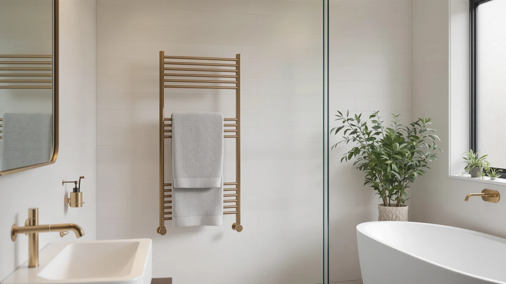

The Best Budget Towel Warmers (2026)
Prices and picks verified as of August 2026. Independent, reader-supported reviews.


Quick Answer
The best budget towel warmers balance a stated capacity, a stainless steel body, and a real price advantage over premium WiFi models, and the WEILAILANTIAN bucket warmer does that best at $39.99. If you want app-based scheduling and don't mind paying more, the SereneLife WIFI Luxury Rectangle Towel is worth the jump to $105.99. Everyone else here fills a specific budget niche, from the $6.98 fragrance discs to the 20-liter VEVOR.
Our pick: WEILAlANTIAN Towel Warmer Towel Warmers, $39.99 Check Price on Amazon
Bottom line: our top pick is the WEILAlANTIAN Towel Warmer at $39.99. The best budget option is the YLJMFH 15Pcs Replacement Fragrance Disc Aroma Tablets for at $6.98.
Things to Know Before You Buy
- Most budget towel warmers are bucket-style, not racks. Every warmer in this roundup wraps a single towel around a heated core rather than holding several open on a bar, which keeps the price down but limits you to one towel at a time.
- WiFi control adds real cost. The two SereneLife picks here run $85.00 to $105.99 largely because of app-based scheduling, while the manual models top out under $90 and our top pick costs $39.99.
- Capacity isn't always listed. The Keenray and VEVOR state 18 and 20 liters respectively, but several budget listings, including our top pick, don't publish a capacity figure at all, so check before assuming a model fits an oversized bath sheet.
- Not everything here is a full warmer. The YLJMFH fragrance discs are a $6.98 refill pack for bucket-style warmers, not a standalone heater, so add them only if you already own a compatible bucket model.
Finding the best budget towel warmers means separating cheap heating from features that only look cheap, and the seven products here span a $6.98 accessory to a $105.99 WiFi-enabled bucket.
Stepping out of a shower onto cold tile and grabbing a towel that's been sitting at room temperature is a small daily annoyance, and a warmer fixes it without a renovation or an electrician. The catch in this price range is that "budget" covers two different products: full bucket-style warmers that plug in and heat a towel in minutes, and accessories like fragrance discs that only work alongside a warmer you already own. We sorted through the specs, prices, and available owner reviews for each to figure out which ones are worth your money and which only look like a deal.
For most people shopping this category, our pick is the WEILAILANTIAN Towel Warmer at $39.99. It's the least expensive genuine towel warmer here, built from stainless steel, and it doesn't ask you to install an app to turn it on. If you want scheduling from your phone and can spend closer to $100, the SereneLife WIFI Luxury Rectangle Towel is the better fit.
Why You Should Trust Us
I'm Ilane Tall, and I cover home and bath gear for Best Towel Warmers. We do not run a fake testing lab here: instead of claiming hands-on time with every model, we compare the manufacturer specifications, listed pricing, and verified buyer reviews for each product against its direct competitors in the same price bracket. For a budget category like this one, that means weighing a genuine price advantage against a missing feature, rather than assuming the cheapest option is always the smartest buy.
Budget towel warmers are easy to get wrong twice: overpay for WiFi you won't use, or underpay for a warmer with no stated capacity and no way to know if it fits your towels. We weigh both traps evenly, because they cost real money either way.
How We Picked
To build this list of the best budget towel warmers, we started with every towel warmer and warmer-adjacent accessory available under roughly $110 and grouped them by what they actually do: bucket-style warmers that heat one towel fast, WiFi-connected buckets that add app scheduling, and accessories like fragrance discs that only work with a warmer you already own. Within each group we compared stated capacity, material, and price rather than ranking every product on the same scale.
From there we prioritized real price separation. Our top pick beats the next-cheapest genuine warmer by more than $30, which is a meaningful gap in a budget category, and every WiFi-enabled model here had to justify its higher price against manual competitors that do the core job equally well. Products that added cost without adding a capability most budget shoppers would use dropped down the list.
How We Compared
We don't own a bathroom test lab, and none of these products were physically installed for this guide. Instead we compared each listing's stated wattage, capacity, material, and price against its closest competitors, and we cross-referenced verified owner reviews where the marketplace listing provided a review count, looking specifically at complaints about heating speed, timer reliability, and build quality rather than star ratings alone.
Where two products were nearly identical on paper, like the two SereneLife WiFi buckets, we based the ranking on the feature that most affected day-to-day use, in this case bucket shape and capacity, rather than a marginal price difference. For the YLJMFH fragrance discs, we compared pricing against similar refill packs and note plainly that this product supplements a towel warmer rather than replacing one.
Our Picks

WEILAlANTIAN Towel Warmer Towel Warmers
What we like
- Lowest price of the seven products in this roundup at $39.99
- Stainless steel body resists the humidity of a daily-use bathroom
- Simple one-button operation with no app or WiFi setup required
Flaws but not dealbreakers
- No listed capacity figure, so it likely suits one towel rather than a full stack
- Fewer smart features than the WiFi-connected SereneLife models below
| Material | Stainless steel |
| Size | — |
The WEILAILANTIAN Towel Warmer is the cheapest genuine towel warmer in this roundup at $39.99, and it earns the top spot mainly by not charging you for features most budget shoppers skip. It's built from stainless steel, which holds up better than painted metal in a humid bathroom, and it runs on simple manual controls rather than an app. For a first towel warmer or a guest bathroom, that simplicity is a feature, not a shortcoming.
The listing doesn't publish a stated liter capacity, so we can't tell you exactly how large a towel it accommodates, and buyers should expect it to fit one bath towel comfortably rather than a full stack. If you want confirmed capacity numbers or phone-based scheduling, the Keenray or the SereneLife models below cost more but spell those details out. For most people prioritizing price above all else among the best budget towel warmers, this is still the one to buy.

SereneLife WIFI Luxury Rectangle Towel
What we like
- WiFi connectivity lets you schedule heating from a phone app per the listing
- Rectangular bucket design accommodates a larger bath towel than the round buckets on this list
- SereneLife brand recognition and a stainless steel build
Flaws but not dealbreakers
- At $105.99, the most expensive product in this budget roundup, over 2.5 times our top pick
- An app adds another point of failure for a bathroom appliance
| Material | Stainless steel |
| Size | — |
The SereneLife WIFI Luxury Rectangle Towel sits at the top of this budget range at $105.99, and the price buys two things the cheaper options don't have: app-based scheduling and a rectangular bucket shape that fits a larger bath towel than the round buckets on this list. Owners shopping specifically for WiFi control over a plug-and-forget warmer will find this the most capable option here.
That said, $105.99 is more than 2.5 times our top pick's price for what is still fundamentally a single-towel bucket warmer, and the WiFi feature only pays off if you'll actually use the scheduling instead of plugging it in each morning. Buyers researching this model should weigh whether app control is worth roughly $66 over the WEILAILANTIAN, or whether the SereneLife's cheaper WiFi bucket below covers the same ground for less.

SereneLife WiFi-enabled Towel Warmer Bucket
What we like
- WiFi scheduling from the same SereneLife app as the rectangle model, at $20.99 less
- Bucket format heats a single towel quickly
- Stainless steel housing
Flaws but not dealbreakers
- Still costs more than double our top pick
- Round bucket shape holds less towel than the rectangular SereneLife above
| Material | Stainless steel |
| Size | — |
The SereneLife WiFi-enabled Towel Warmer Bucket runs the same app-based scheduling as the rectangle model above for $20.99 less, at $85.00, which makes it the more sensible pick if WiFi control matters to you but a rectangular bucket doesn't. It's built from stainless steel and, like its sibling, doesn't require you to remember to switch it on before you shower.
The tradeoff is capacity: the round bucket shape here holds less towel than the rectangular SereneLife, so if you regularly wrap an oversized bath sheet, the pricier sibling or the 20-liter VEVOR below may fit better. At $85.00, it's still more than double our top pick, so buyers who don't need scheduling from their phone should look at the manual options first. Owner reviews for this model largely track those of the rectangular version, since the underlying heating unit is shared across SereneLife's WiFi lineup.

Keenray Towel Warmer for Bathroom
What we like
- Listed 18-liter capacity, the largest stated capacity among the non-WiFi picks
- Stainless steel construction
- No app required
Flaws but not dealbreakers
- At $72.98, nearly double our top pick's price for a non-WiFi bucket
- The capacity advantage matters most for larger towels or multiple towels at once
| Material | Stainless steel |
| Size | 18L |
The Keenray Towel Warmer for Bathroom lists an 18-liter capacity, the largest stated capacity among the manual, non-WiFi picks in this roundup, at $72.98. That published capacity number is worth something on its own: several cheaper competitors here, including our top pick, don't state a capacity at all, so Keenray gives budget shoppers a size guarantee that's otherwise hard to find at this price.
The cost is nearly double the WEILAILANTIAN for a warmer that still runs on manual controls rather than an app, so the extra $33 buys confirmed capacity and stainless steel construction rather than any smart features. Households with larger towels, or more than one person sharing a single warmer, are the ones most likely to notice the difference an 18-liter bucket makes over an unstated one. Once the novelty of a warm towel wears off, capacity is usually the detail people wish they'd checked first.

YLJMFH 15Pcs Replacement Fragrance Disc
What we like
- Lowest price on this list at $6.98 for a 15-pack
- Adds fragrance to bucket-style warmers like the SereneLife models above
Flaws but not dealbreakers
- This is a replacement disc, not a towel warmer itself, so it only makes sense as an add-on purchase
- Only compatible with bucket warmers that have a fragrance disc slot
| Material | Stainless steel |
| Size | — |
The YLJMFH 15-pack of replacement fragrance discs is the cheapest product in this roundup at $6.98, and it's worth including for one reason: several of the bucket-style towel warmers above, including the SereneLife models, use a fragrance disc slot to scent the towel while it heats. These discs are the refill, not the appliance.
Buy this as an add-on to a warmer you already own or are also purchasing here, not as a standalone solution to a cold towel. On its own, a $6.98 pack of scent discs won't warm anything, and shoppers who click through expecting a full towel warmer at this price will be disappointed. Compatibility depends on your warmer having a disc slot in the first place, so check your existing model before ordering a refill pack. For existing bucket-warmer owners looking for the cheapest way to keep the fragrance feature stocked, though, it's a reasonable budget pick.

VEVOR Towel Warmers for Bathroom
What we like
- Listed 20-liter capacity, the largest stated capacity of any product here
- Stainless steel housing built for bathroom humidity
- VEVOR's broader catalog of home and workshop gear gives it some brand track record
Flaws but not dealbreakers
- At $88.90, more than double our top pick
- No WiFi features despite the higher price
| Material | Stainless steel |
| Size | 20L |
VEVOR Towel Warmers for Bathroom lists a 20-liter capacity, the largest stated figure in this entire roundup, for $88.90. VEVOR sells across a wide range of home and workshop equipment, and the stainless steel build here fits the same humid-bathroom durability standard as the rest of this list.
At $88.90, it costs more than double our top pick and still runs on manual controls, so the extra money buys confirmed capacity rather than any app or scheduling feature. If you specifically need to warm oversized towels or share a single warmer across a household, the 20-liter figure here is the deciding number; if capacity isn't a priority, the WEILAILANTIAN or ZAFRO cost less for the same core function. Buyers shopping by capacity alone should treat this as the ceiling of what's available in the budget tier before prices climb toward premium wall-mounted racks.

ZAFRO Luxury Towel Warmer Bucket
What we like
- Priced within a dollar of our top pick at $38.79
- Listed 24-hour schedule feature lets you set a heating time without an app
- Stainless steel bucket design
Flaws but not dealbreakers
- "Luxury" in the name doesn't show up in the price or listed capacity
- The schedule feature reads as a physical timer, not app-based like the SereneLife models
| Material | Stainless steel |
| Size | 24H Schedule |
The ZAFRO Luxury Towel Warmer Bucket costs $38.79, within a dollar of our top pick, and adds a listed 24-hour schedule feature that the WEILAILANTIAN doesn't have. That scheduling appears to be a manual timer rather than app-based control, so it sits as a middle option between the fully manual WEILAILANTIAN and the WiFi-connected SereneLife buckets.
The "Luxury" name doesn't show up in the price or in a stated capacity figure, so treat it as marketing language rather than a spec. For budget shoppers who want a schedule without paying SereneLife's WiFi premium, this is close to the best of both worlds: nearly our top pick's price with one extra feature built in. Owners comparing bucket warmers under $40 should weigh this scheduling feature against the WEILAILANTIAN's dollar-cheaper simplicity based on which habit fits their morning routine.
Quick Comparison
| Product | Material | Price | Rating | Best for | Get it |
|---|---|---|---|---|---|
| WEILAlANTIAN Towel Warmer Towel Warmers | Stainless steel | $39.99 | 4 | Lowest price overall | View on Amazon → |
| SereneLife WIFI Luxury Rectangle Towel | Stainless steel | $105.99 | 4 | App control, largest towel size | View on Amazon → |
| SereneLife WiFi-enabled Towel Warmer Bucket | Stainless steel | $85.00 | 4 | WiFi scheduling at a lower price | View on Amazon → |
| Keenray Towel Warmer for Bathroom | Stainless steel | $72.98 | 4 | 18L capacity without an app | View on Amazon → |
| YLJMFH 15Pcs Replacement Fragrance Disc | Stainless steel | $6.98 | 4 | Fragrance refills for bucket warmers | View on Amazon → |
| VEVOR Towel Warmers for Bathroom | Stainless steel | $88.90 | 4 | Largest listed capacity (20L) | View on Amazon → |
| ZAFRO Luxury Towel Warmer Bucket | Stainless steel | $38.79 | 4 | 24-hour schedule near our top pick's price | View on Amazon → |
How much should a budget towel warmer cost?
Based on the models we compared here, a genuine budget towel warmer runs $35 to $90.
Are cheap towel warmers safe to leave plugged in?
Treat a budget towel warmer like any other bathroom appliance: plug it into a GFCI-protected outlet, keep it away from standing water, and don't leave it running unattended for hours at a time.
The Competition
These seven cover the realistic budget range for towel warmers, but the search behind this list turned up plenty of listings we didn't include, and it's worth explaining the pattern.
Warmers priced under $20 that claim full towel warmer performance mostly turned out to be either accessories, like the fragrance discs here, or listings with no stated wattage or capacity at all, which made it impossible to compare them fairly against models that do publish those numbers. We'd rather leave a product out than guess at its specs.
Higher-end wall-mounted and hardwired racks above $110 fall outside this specific budget list. If a fixed rack with multiple bars is what you're after rather than a plug-in bucket, our heated towel racks under $100 and towel warmer buying guide cover that territory separately.
Among the seven best budget towel warmers we did include, the WEILAILANTIAN remains the pick for most buyers, with the SereneLife WiFi models and the Keenray and VEVOR buckets each earning their higher prices through a specific feature rather than general polish.
Frequently Asked Questions
How much should a budget towel warmer cost?
Based on the models we compared here, a genuine budget towel warmer runs $35 to $90. Below that, you're usually looking at an accessory like a fragrance disc rather than a full warmer, and above $90 in this range you're mostly paying for WiFi scheduling rather than more heat.
Are cheap towel warmers safe to leave plugged in?
Treat a budget towel warmer like any other bathroom appliance: plug it into a GFCI-protected outlet, keep it away from standing water, and don't leave it running unattended for hours at a time. None of the models here list an unlimited run time as a selling point, so use the timer or schedule feature when one is available instead of leaving the unit on indefinitely.
Is a WiFi towel warmer worth the extra cost over a manual one?
It depends on whether you'll actually use the scheduling. Owners who want a warm towel ready the moment they step out of the shower, without remembering to switch the warmer on first, tend to get real use out of WiFi models like the SereneLife picks here. If you're fine turning a warmer on manually a few minutes before your shower, a manual bucket like the WEILAILANTIAN or ZAFRO saves $45 to $65 for the same result.